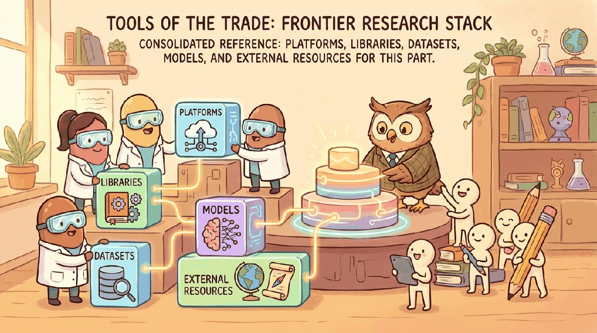

"The frontier is the part of the map that is currently being drawn. The tools listed here will not survive the decade."
Frontier, Pre-Print-Reading AI Agent
Chapters 75 through 82 surveyed the frontier. This chapter is the toolkit for keeping up: arxiv-sanity, alphaXiv, Hugging Face Daily Papers, Papers with Code, reading lists, replication tools, and the small habits that distinguish someone who follows the field from someone who chases it.
Part XII looked at the frontiers: where research is headed, where the open questions are, and what the next decade of LLM work might look like. This chapter is the toolbox for staying current: the paper firehose (arXiv, Papers with Code), the lab publications (Anthropic, OpenAI, EleutherAI, Nous, Stability), and the live evaluation tracking (LMArena, Artificial Analysis).
Chapter Overview
Part XV covered frontier theory and AGI trajectories. This chapter consolidates the frontier-research toolchain: the platforms (arXiv, Semantic Scholar, ResearchRabbit, Elicit, OpenReview), the libraries organized by paper tracking, reproducibility (Hydra, DVC, W&B), and reference management, the benchmark suite that defines the empirical anchor, the 2025 to 2026 model shelf organized by reasoning-first, agent-first, and capability-frontier tiers, and the venues (NeurIPS, ICML, ICLR, COLM, Anthropic and OpenAI engineering blogs) that publish the next frontier.
Frontier-research tooling moves faster than peer review, so this chapter focuses on what stays stable: the platforms, the reproducibility libraries, and the venues that publish whichever specific tools come next.
- Use arXiv, Semantic Scholar, ResearchRabbit, Elicit, and OpenReview as paper-tracking infrastructure.
- Apply Hydra, DVC, and W&B as the reproducibility substrate for frontier research code.
- Evaluate frontier benchmarks and reason about contamination and saturation.
- Choose between reasoning-first (o3, Claude Opus, Gemini 2.5 Pro Deep Think, DeepSeek-R1) and capability-frontier models for a target experiment.
- Track the venues, conferences, and engineering blogs that publish the next frontier.
For the minimum information diet:
pip install arxivThe arxiv Python client plus a daily reading hour is the closest thing to a frontier-tracking habit that has held up since 2018. Complement with Hugging Face Papers for curation.
Sections in This Chapter
Prerequisites
- Modern LLM landscape from Chapter 7
- Evaluation tooling from Chapter 45
- An arxiv account and the patience to read pre-prints
- 78.1 Platforms The frontier moves faster than peer review.
- 78.2 Libraries & Frameworks The frontier-research library ecosystem has consolidated around three layers: paper-tracking (arxiv.py, ResearchRabbit, Elicit), reproducibility (Hydra, DVC, W&B), and reference...
- 78.3 Datasets & Benchmarks Benchmarks are the field's empirical anchor.
- 78.4 Models The 2025-26 model shelf has three tiers: reasoning-first (o3 and o4-mini, Claude Opus 4.5 with extended thinking, Gemini 2.5 Pro with Deep Think, DeepSeek-R1 and R1-0528, the GPT-5 family's...
- 78.5 External Reading & Communities The specific tools listed in this book will mostly be obsolete within five years; the venues that publish the next list will mostly still be alive.
What Comes Next
This is the final chapter. After Section 78.5, you have finished the book. The appendices remain as reference material; Appendix index lists them all.